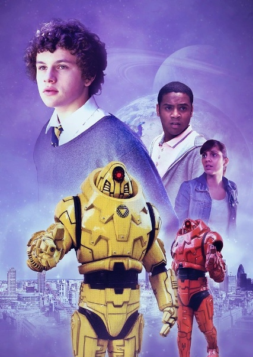

Эра Одиннадцатого Доктора
<<< НАЗАД ||| 7-8. Пустая планета ||| ДАЛЬШЕ >>>
MVO ВГТРК, или Original [ENG]
Субтитры: Русские {TrueTransLate}

The Empty Planet
Дата выхода: 1-2 ноября 2010
Формат: 2 эпизода по 30 мин.
| Варианты озвучек: | * Разные: смотрите по инструкции |
|---|---|
| Скачивание и просмотр: |
Рани и Клайд остались одни на планете. На всех коммуникационных средствах возникают странные символы, означающие обратный отсчёт, по улицам Лондона бродят два робота, требуя вернуть им «наследника», а Клайд и Рани должны выяснить, почему остались именно они, и кто такой «наследник», иначе люди никогда не вернутся на Землю…


Трейлер: